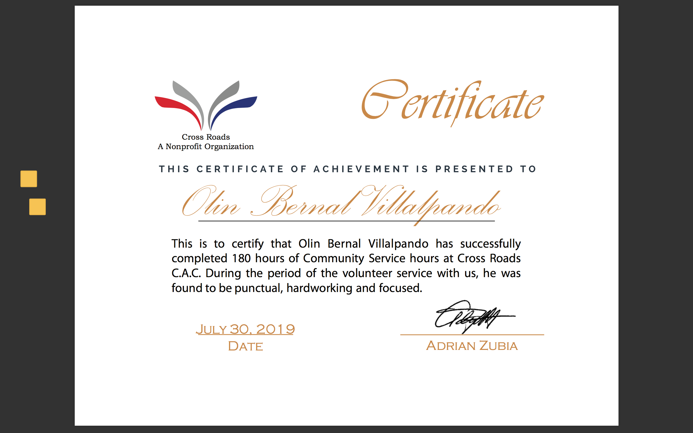
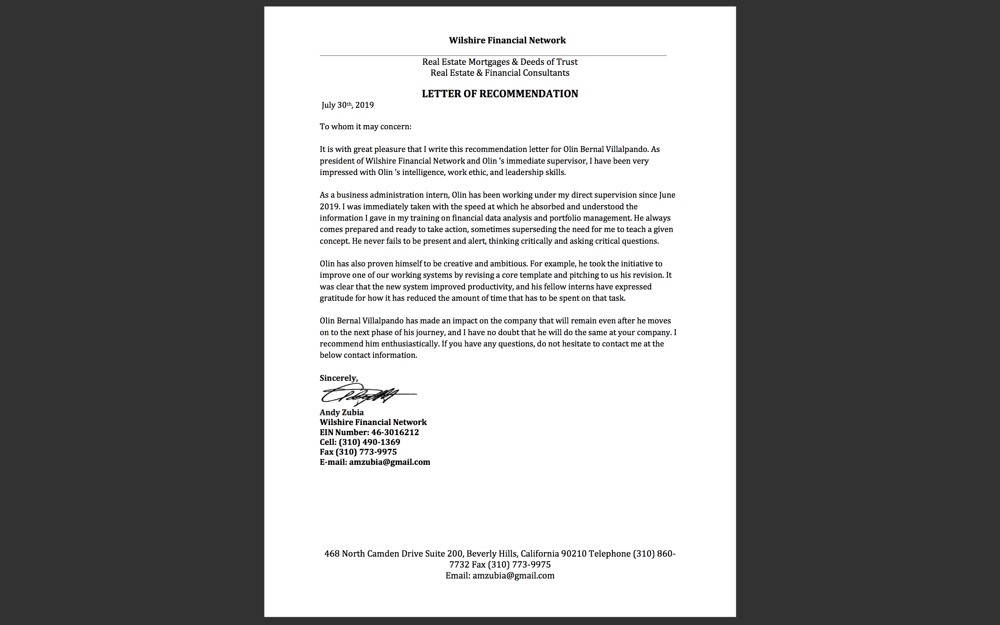
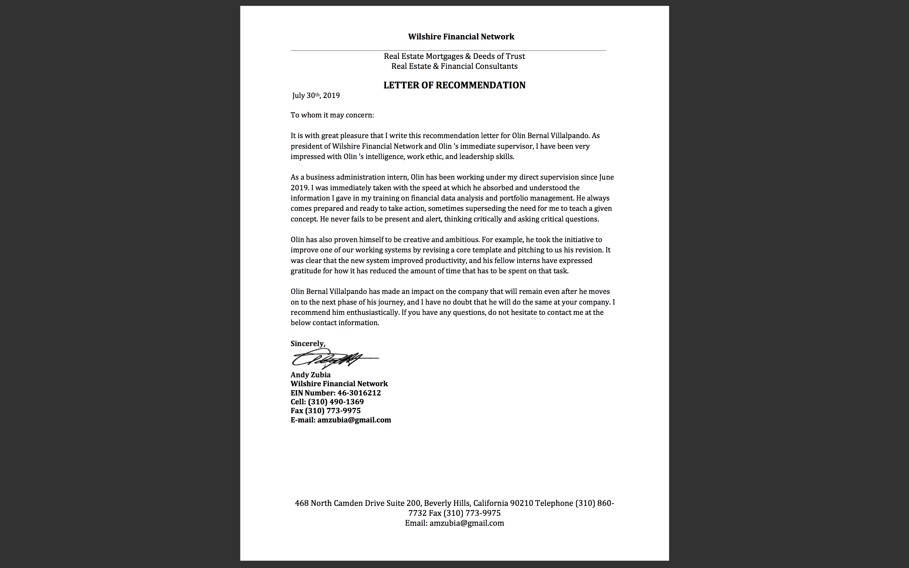

Olin Bernal Villalpando
My name is Olin Bernal Villalpando I am as second year economics major with a minor in philosophy at the University of California, Riverside. I am currently 19 years old and was born and Raised in the wonderful Salt Lake City, Utah.
My passions skills include; Finance, Tech, and Data Analytics. I am passionate about these things becasue they allow me to look at eveyday things trough a critical lense and help me problem solve real word situations.
I am atending the University of California, Riverside because of its wonderful economics program, and to study under its distinguished faculty. After my undergrad I hope to go into the field of investment banking and apply the various skills and knowledge I attained at this university to my career. Ulitmatley I would like to return to school to complete a masters in buisness but I would like a few years of experience in the job market first.
I am a very driven and hard working indiviudal. I belive that my passions help propel me to do better in the work place. I work incredibly well in group setting and enjoy calaborating with other inteligent like minded individuals to achive a set goal or target.
Possibly my most valuable tool is my experience from previous internships. I have had an interhsip in both Finance and data analysis. The Finance inthership allowed me to strengthen my Technical skills such as Valuation, buisness operations, and Accounting. My data analyst inthership helped me look at things from a broader perspective and thought me how to use data and apply it to models to make informed decision for a firm. I highly value these two experiences because they have given me skills that i will be able to apply to my career troughout the rest of my life.
Experience
Finance Intern
• Developed Financial Models for clients
• Used models to derive financial valuations
• Experience with Excel, AGL, Power point
Data Intern
• Non profit organization that worked in providing service and resources to working class communities
• Contacted organizations to source resources and funds
Hylander Financial Group analyst
• Analyzed real time market and financial data
• Valued Companies
• Presented specific industy and sector data
Education
University of California, Riverside
Portfolio



